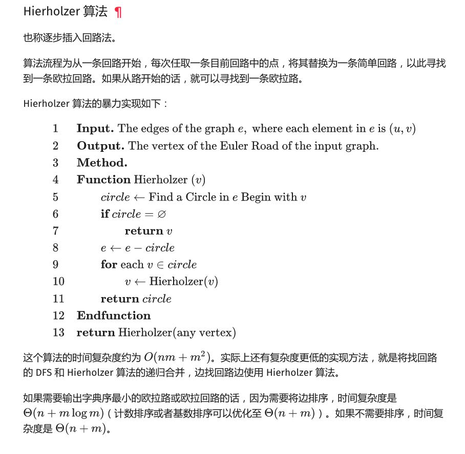

LC 5932. 合法重新排列数对
https://leetcode-cn.com/problems/valid-arrangement-of-pairs/
https://oi-wiki.org/graph/euler/
这题没有什么好的思路，后来看了hint里面提到 "Hierholzer 算法"，于是找到上面这个链接。
仔细想想这个算法其实不怎么难：
- 对于非欧拉回路，第一步要选好初始节点，选择标准就是 `start_counter[x] > end_counter[x]` （数量比end要多）
- 从这个初始节点选择一条路径P
- 遍历这个P中每个节点x，然后从这个节点寻找回路 e
- 那么将e(x->..->x)替换成为这个节点x
- 跳转回2，直到所有路径都被选择完

原理比较好理解，但是我始终没有想到比较好的数据结构，因为每次选择出来回路需要覆盖回去。如果不考虑这个部分的实现， 算法复杂度好像还可以，大约是在O(N)左右。
class Solution:
def validArrangement(self, pairs: List[List[int]]) -> List[List[int]]:
from collections import defaultdict, Counter
seg = defaultdict(list)
sc, ec = Counter(), Counter()
for i in range(len(pairs)):
s, e = pairs[i]
seg[pairs[i][0]].append(i)
sc[s] += 1
ec[e] += 1
head = pairs[0][0]
for x in sc.keys():
if sc[x] > ec[x]:
head = x
break
def find_path(node):
path = []
while True:
ps = seg[node]
if not ps:
break
index = ps.pop()
path.append(index)
node = pairs[index][1]
return path
ans = find_path(head)
while len(ans) != len(pairs):
for i in range(len(ans)):
node = pairs[ans[i]][0]
ext = find_path(node)
if ext:
ans = ans[:i] + ext + ans[i:]
break
# print(ans)
return [pairs[x] for x in ans]
UPDATE: 其实我们在find_path的时候不断地循环查找head的所有路径，一旦确认head所有路径都被查找完成了，就可以推送到ans里面，否则继续放在queue里面。 我觉得下面的实现应该是更加高效，虽然提交的时候运行时间更长了，整个时间复杂度应该是O(N).
class Solution:
def validArrangement(self, pairs: List[List[int]]) -> List[List[int]]:
from collections import defaultdict, Counter
seg = defaultdict(list)
sc, ec = Counter(), Counter()
for i in range(len(pairs)):
s, e = pairs[i]
seg[pairs[i][0]].append(i)
sc[s] += 1
ec[e] += 1
head = pairs[0][0]
for x in sc.keys():
if sc[x] > ec[x]:
head = x
break
ans = []
queue = []
def find_path(node):
path = []
while True:
ps = seg[node]
if not ps:
break
index = ps.pop()
path.append(index)
node = pairs[index][1]
return path
path = find_path(head)
for x in reversed(path):
queue.append(x)
while queue:
head = pairs[queue[-1]][0]
while seg[head]:
path = find_path(head)
for x in reversed(path):
queue.append(x)
ans.append(queue.pop())
# print(ans)
return [pairs[x] for x in ans]